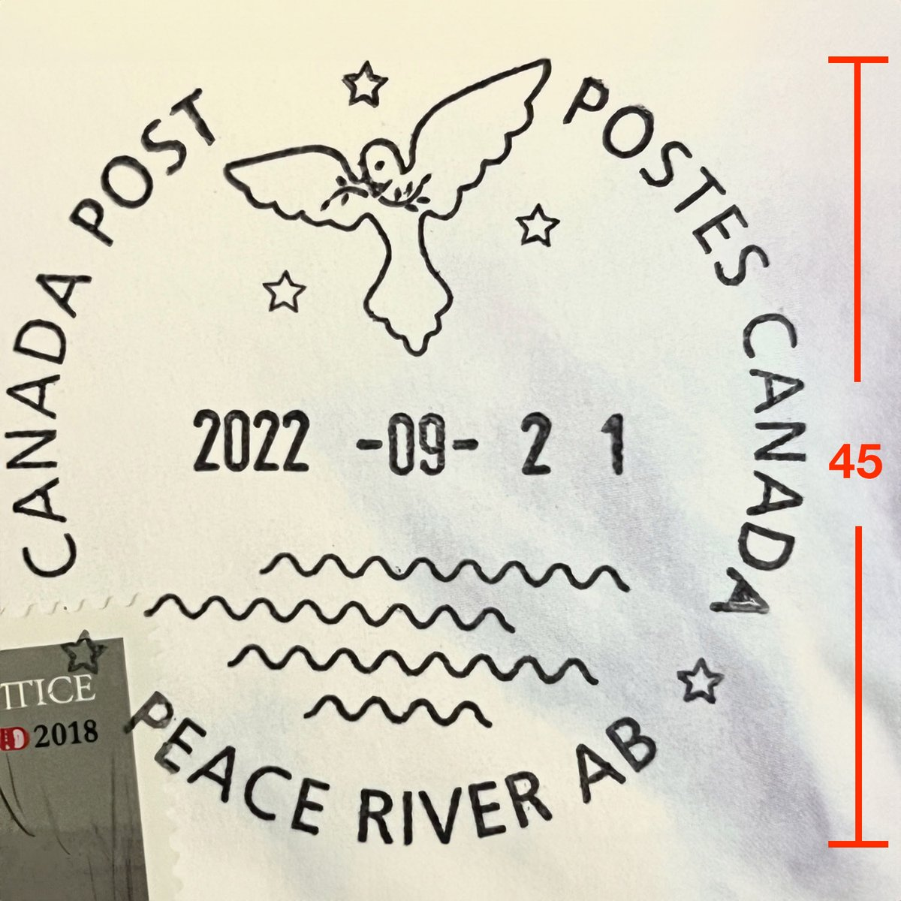

Peace River PO pictorial cancel
Peace dove with an olive branch, river · New
- Status
- Active
- Run dates
- 2022-01-01 to present
- Design
- peace dove with an olive branch, river
- Ink colour
- Black
- Designer
- Unknown
- Post office
- Peace River PO
10031 100 St
Peace River, AB
T8S 1A0 - Subjects
- animal, bird, dove, river
Collect it by mail. Send your stamped covers, with a stamped return envelope, to the post office address above. How to collect pictorial cancels by mail · en français
 Tangent PORose
Tangent PORose Falher POHope, Tenacity, Prosperity
Falher POHope, Tenacity, Prosperity Eaglesham POEagle
Eaglesham POEagle McLennan POBird Capital of Canada
McLennan POBird Capital of Canada Manning POThe land of the mighty moose
Manning POThe land of the mighty moose